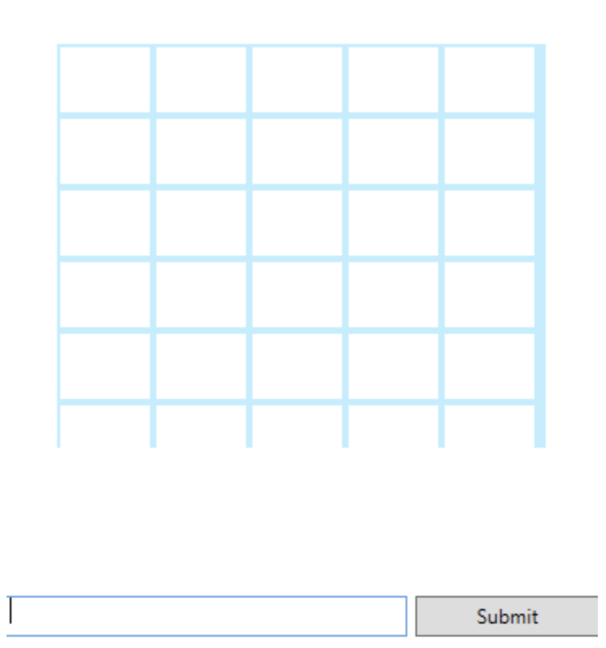

This was an in class tutorial on how to make a game similar to the New York Times game, Wordle. We used a WPF and GUI design in C# to create the user interface and also imported pretty much all the 5 letter words in the english language to get a database for the gameplay.
This project was done in class, so the overall logic was taught to us. We also did have to go home and fix some of the issues within the projects, such as the rows and the colums, we had 1 more column instead of a row. But it was a quick logic fix. At first for when I worked on this project independently, the ordle board would not show anything, but it was also another quick fix.